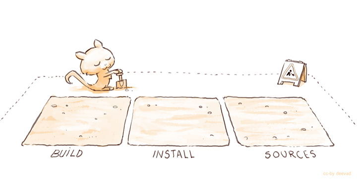
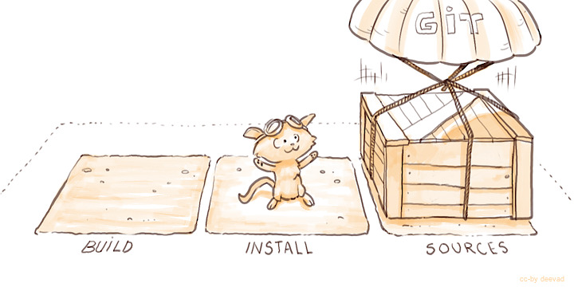
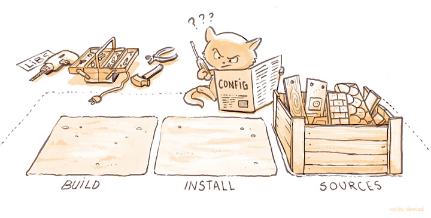
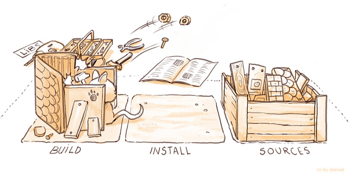
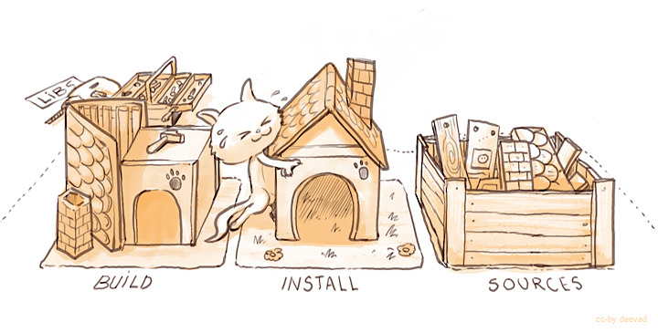
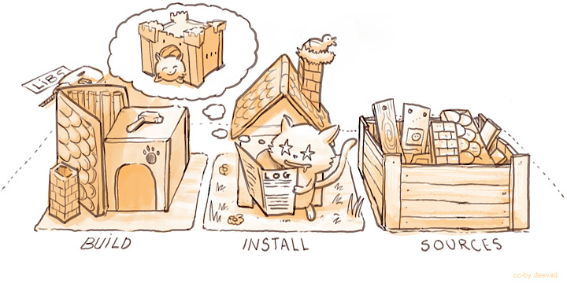
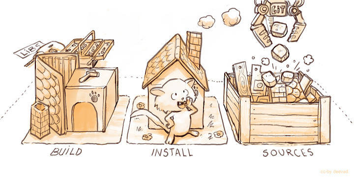
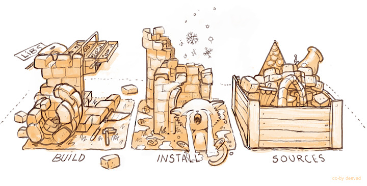
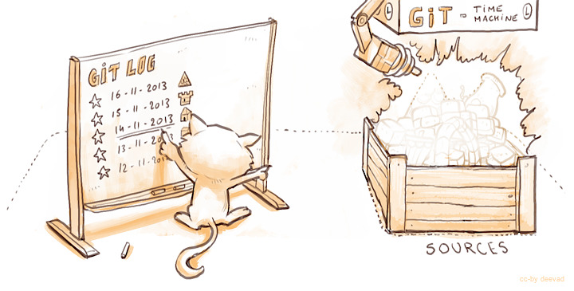

Building Krita from Source¶
If you want to help developing Krita, you need to know how to build Krita yourself. If you merely want to run the latest version of Krita, to test a bug or play with, you can use the nightly build for Windows the nightly build for Linux, or the nightly build for macOS.
You can build Krita on Linux, Windows, macOS and on Linux for Android. The libraries Krita needs (for instance to load and save various image types) are called dependencies.
Linux is the easiest operating system to build Krita on because all the libraries that Krita needs are available on most recent Linux distributions. For an easy guide to building Krita see Building Krita on Linux for Cats.
On macOS you can use tools like homebrew to get the dependencies, or build the dependencies manually. Building the dependencies manually is recommended because we have a number of changes to the source for libraries to make them function better with Krita.
On Windows you can either reuse the dependencies from the KDE Binary Factory, or build the dependencies yourself.
On all operating systems, you need to be familiar with using a terminal. Building Krita is a technical task and demands accuracy in following instructions and intelligence in understanding what happens.
Building on Linux¶
Preparing your development environment¶
The most convenient layout is as follows:
$HOME/kritadev/krita -- the source code
$HOME/kritadev/build -- the location where you compile krita
$HOME/kritadev/install -- the location where you install krita to and run krita from
we will call the "kritadev" folder your build root.
Note: type in what's shown after '>' in the following commands
you@yourcomputer:~>cd
you@yourcomputer:~>mkdir kritadev
you@yourcomputer:~/>cd kritadev
you@yourcomputer:~/kritadev> mkdir build
you@yourcomputer:~/kritadev> mkdir install
Getting the Source Code¶
Open a terminal and enter the build root. Clone Krita from kde's git infrastructure (not github):
you@yourcomputer:~/kritadev> git clone https://invent.kde.org/graphics/krita.git
Configuring the Build¶
you@yourcomputer:~/kritadev> cd build
Krita uses cmake (https://cmake.org) to define how Krita is built on various platforms. You first need to run cmake to generate the build system, in the kritadevs/build directory, then run make to make Krita, then run make install to install krita.
you@yourcomputer:~/kritadev/build>cmake ../krita \
-DCMAKE_INSTALL_PREFIX=$HOME/kritadev/install \
-DCMAKE_BUILD_TYPE=Debug \
-DKRITA_DEVS=ON
Unless you have installed all the dependencies Krita needs, on first running cmake, cmake will complain about missing dependencies. For instance:
-- The following RECOMMENDED packages have not been found:
* GSL, <https://www.gnu.org/software/gsl/>
Required by Krita's Transform tool.
This is not an error, and you can fix this by installing the missing package using your distribution's package manager. Do not download these packages manually from the source website and build them manually. Do use your distribution's package manager to find the right packages.
For example, for Ubuntu, you can start with:
you@yourcomputer:~/kritadev/build>apt-get build-dep krita
Which will install all the dependencies of the version of Krita in the repositories. You might need to enable the deb-src repositories by editing /etc/apt/sources.list (see https://help.ubuntu.com/community/Repositories/CommandLine) or, if you're using the KDE Plasma desktop, enabling them in the Settings of the Discover application.
However, the development version might use different dependencies, to find these, you can use apt-cache search:
you@yourcomputer:~/kritadev/build>apt-cache search quazip
libquazip-dev - C++ wrapper for ZIP/UNZIP (development files, Qt4 build)
libquazip-doc - C++ wrapper for ZIP/UNZIP (documentation)
libquazip-headers - C++ wrapper for ZIP/UNZIP (development header files)
libquazip1 - C++ wrapper for ZIP/UNZIP (Qt4 build)
libquazip5-1 - C++ wrapper for ZIP/UNZIP (Qt5 build)
libquazip5-dev - C++ wrapper for ZIP/UNZIP (development files, Qt5 build)
libquazip5-headers - C++ wrapper for ZIP/UNZIP (development header files, Qt5 build)
You will want to get the 'dev' library here, because you're doing dev, and then Krita is using Qt5, so select that one. If this doesn't help, check the Ubuntu packages search.
If all dependencies have been installed, cmake will output something like this:
-- Configuring done
-- Generating done
-- Build files have been written to: /home/boud/dev/b-krita
警告
There is one run-time package that you need to install. CMake will not warn about it missing. That is the Qt5 SQLite database driver package. On Ubuntu this is named libqt5sql5-sqlite, the name might be different on other distributions. You need this to be able to start Krita after you have built and installed Krita! This is only needed if you build the master (5.0) branch of Krita.
Until that is shown, cmake has not succeeded and you cannot build Krita. When this is shown, you can build Krita:
you@yourcomputer:~/kritadev/build> make
You can speed this up by enabling multithreading. To do so, you first figure out how many threads your processor can handle:
cat /proc/cpuinfo | grep processor | wc -l
Then, add the resulting number with -j (for 'Jobs') at the end, so for example:
you@yourcomputer:~/kritadev/build> make -j4
Installing¶
When the build has fully succeeded, you can install:
you@yourcomputer:~/kritadev/build> make install
And when that is complete, you can run Krita:
you@yourcomputer:~/kritadev/build>../install/bin/krita
Running Krita¶
You do not have to set environment variables in order to run Krita.
you@yourcomputer:~> cd ~/kritadev/
you@yourcomputer:~> ./install/bin/krita
Updating¶
Now, Krita is in constant development, so you will want to update your build from time to time. Maybe a cool feature got in, or a bug was fixed, or you just want the latest source.
First, we get the new source from the git repository:
you@yourcomputer:~> cd ~/kritadev/krita/
you@yourcomputer:~/kritadev/krita> git pull
If you want to get the code from a specific branch, you will need to checkout that branch first:
you@yourcomputer:~/kritadev/krita> git checkout <name of the branch>
you@yourcomputer:~/kritadev/krita> git pull
Then, we build again:
you@yourcomputer:~/kritadev/krita> cd ~/kritadev/build/
you@yourcomputer:~/kritadev/build> make install
If you update daily, you might want to automate these command by making your own minimal bash script.
Trouble Shooting¶
The recent development version might break, or sometime be just unusable. Experimental changes are made daily.
This will affect your productivity if you don't know how to 'go back in time' (for example, your favorite brush doesn't work anymore).
But if you know how to do it, no issue can really affect you, because you know how to come back to a previous state.
To travel the source in time we need to read the timeline history. The terminal tool for it is git log.
you@yourcomputer:~> cd ~/kritadev/krita/
you@yourcomputer:~/kritadev/krita> git log
With git log, you can consult all the last changes to the code, the 'commit'. What we're interested in is the long identification number, the 'git hash' (such as cca5819b19e0da3434192c5b352285b987a48796). You can scroll the git log, copy the ID number then quit(letter Q on keyboard). Then time-travel in your source directory:
you@yourcomputer:~/kritadev/krita> git checkout cca5819b19e0da3434192c5b352285b987a48796
you@yourcomputer:~/kritadev/krita> git pull
And, we build again:
you@yourcomputer:~/kritadev/krita> cd ~/kritadev/build/
you@yourcomputer:~/kritadev/build> make install
To update again to the actual and 'fresh from a minute ago' source-code named master, simply ask git to come back to it with git checkout then pull to update :
you@yourcomputer:~/kritadev/krita> git checkout master
you@yourcomputer:~/kritadev/krita> git pull
Common problems¶
Outside of the source being unstable, there's the following common problems:
The most common problem is a missing dependency. Install it. A missing dependency is not an "error" that you need to report to the other Krita developers.
A dependency can also be too old. CMake will report when the version of a dependency is too old. That is also not an "error". You might need to update your Linux installation to a newer version.
You can also have a successful build, then update your linux installation, and then find that Krita no longer builds. A library got updated, and you need to remove the
CMakeCache.txtfile in your build dir and run cmake again.Sometimes, changes in Krita's source code from git revision to git revision make it necessary to make your installation and/or build dir empty and build from scratch. One example is where a plugin is removed from Krita; the plugin will be in your install dir, and won't get updated when Krita's internals change.
Building on Windows¶
On Windows, you can either reuse the dependencies from the KDE Binary Factory, or build the dependencies yourself. If you decide to build all the dependencies yourself, this will take a long time. Note that you will do all your work in a CMD command window.
This is also more difficult than building Krita on Linux, so you need to pay attention to details. If you follow the guide closely, install correct dependencies and make sure your PATH doesn't contain anything unwanted, there should be no issues.
Prerequisites¶
CMake 3.16.0 or later, the latest is usually fine - https://cmake.org/download/
Ninja build system - https://github.com/ninja-build/ninja/releases
Since Ninja is a single executable, you can place it in the bin folder of CMake, next to
cmake.exefor convenience.
LLVM MinGW compiler toolchain
Can be downloaded here: https://github.com/mstorsjo/llvm-mingw/releases/download/20220323/llvm-mingw-20220323-ucrt-x86_64.zip
Unzip the archive with 7zip into a folder like
C:\llvm-mingw; the full path must not contain any spaces.At the time of writing, we are using the tagged release 20220323 with LLVM 14.0.0 on the Binary Factory. In theory a newer version should be compatible, but use at your own risk.
If you really want to use other compilers, see below.
You will also need a release of Python 3.8 (not 3.7, not 3.9) - https://www.python.org.
Make sure to have that version of python.exe in your path. This version of Python will be used for two things to configure Qt and to build the Python scripting module. Do not set PYTHONHOME or PYTHONPATH.
Make sure that your Python will have the correct architecture for the version you are trying to build. If building for 32-bit target, you need the 32-bit release of Python.
Install the Windows 10 SDK - https://developer.microsoft.com/en-us/windows/downloads/windows-10-sdk/
It is useful to install Qt Creator - https://download.qt.io/official_releases/qtcreator/
注意
Make double plus sure you do not have any other compilers or development environments or Python installation in your PATH!
Other Compilers¶
In the past we used mingw-w64 gcc 7.3.0 (mingw-builds). This version is no longer supported because our dependencies started requiring a more updated compiler to work.
It is possible to build Krita with a newer mingw-w64 gcc toolchain, for example gcc 11.2.0 by niXman on GitHub (mingw-builds), or the one from MSYS2.
MSYS2 can build Krita with the MINGW64, UCRT64 or CLANG64 environments.
Krita can also be built with MSVC (check the batch file in
build-tools\windows). Krita built with MSVC has suboptimal performance due to codegen issues so we can't use it.
注意
If you use these compilers, you must build the dependencies yourself. Trying to mix dependencies built with a different compiler may outright fail to configure, or Krita may appear to build successfully but you get random crashes wuen running it.
Preparation¶
After installing the Prerequisites, prepare your working directory somewhere, like C:\krita-dev. Keep this short (30 characters in the prefix path is fine, but longer than this and you may get build errors). Makes sure the path does not contain whitespace. If you use a different path, remember to adjust the paths in the later steps.
mkdir C:\krita-dev
cd /d C:\krita-dev
Then prepare a batch file to set the environment. Read this example and adjust the version numbers and paths where necessary so the PATH is correct. Save this as C:\krita-dev\env.bat.
:: Build/dev tools
set MINGW_BIN_DIR=C:\llvm-mingw\llvm-mingw-20220323-ucrt-x86_64\bin
set CMAKE_BIN_DIR=C:\Program Files\CMake\bin
set NINJA_BIN_DIR=C:\krita-dev\ninja
set PYTHON_BIN_DIR=C:\Python38
set QTCREATOR_DIR=C:\Qt\Tools\QtCreator\bin
set BUILDROOT=C:\krita-dev
set PATH=C:\krita-dev\i\bin;C:\krita-dev\i\lib;%MINGW_BIN_DIR%;%MINGW_BIN_DIR%\..\x86_64-w64-mingw32\bin;%CMAKE_BIN_DIR%;%NINJA_BIN_DIR%;%QTCREATOR_DIR%;%PATH%
Every time you want to build or run your home-grown Krita, open the CMD window, change to the C:\krita-dev folder and run the env.bat file:
cd /d C:\krita-dev
env.bat
You will note that most command samples below contain these two lines, but the truth is you only need to run env.bat once for each CMD window.
Then get the source code of Krita:
cd /d C:\krita-dev
git clone https://invent.kde.org/graphics/krita.git
Getting the dependencies¶
Here we have two options. The quick one is to reuse prebuilt dependencies from the Binary Factory. You can only do this if you are using the same version of compiler as the one on the Binary Factory (as stated in the prerequisites section). And the slow one is to build everything ourselves.
Using prebuilt dependencies from the binary factory¶
To fetch prebuilt dependencies just run the embedded cmake script:
cd /d C:\krita-dev
env.bat
mkdir fetch-deps
cmake -S krita\build-tools\ci-deps -B fetch-deps -G "MinGW Makefiles" -DCMAKE_INSTALL_PREFIX=C:/krita-dev/i
cmake --build fetch-deps
(Or you can download it yourself from https://binary-factory.kde.org/job/Krita_Nightly_Windows_Dependency_Build/)
Building dependencies yourself¶
We will build everything on Windows with the same script that is used to make the nightly builds and the releases:
cd /d C:\krita-dev
env.bat
krita\build-tools\windows\build.cmd --no-interactive --jobs 8 --skip-krita --download-dir C:\krita-dev\d --deps-build-dir C:\krita-dev\b_deps --deps-install-dir C:\krita-dev\i
This will take several hours, but you only need to do it once (until you need to update the deps again). When it's ready, make a zip archive of the C:\krita-dev\i folder. That's a backup because we will install Krita into the same folder as the dependencies, and if you need to nuke your Krita build (because you're switching between branches or for some other reason, you'll also nuke your built dependencies. You can also build the depedencies into another folder, like C:\krita-dev\i_deps, but in that case you're going to have trouble running Krita without first packaging it, so that is not recommended unless you really know what you are doing.
Building Krita¶
Again, on the command line, with the same script that is used to make the nightly builds and the releases:
cd /d C:\krita-dev
env.bat
krita\build-tools\windows\build.cmd --no-interactive --jobs 8 --skip-deps --download-dir C:\krita-dev\d --deps-install-dir C:\krita-dev\i --krita-build-dir C:\krita-dev\b_krita --plugins-build-dir C:\krita-dev\b_plugins --krita-install-dir C:\krita-dev\i
If you are hacking on Krita, you can rebuild Krita without running this script by entering the build directory and running mingw32-make -j8 install or ninja install.
cd b_krita
mingw32-make -j8 install
:: or
ninja install
Running Krita¶
You must start Krita from the command prompt, after having run env.bat:
cd /d C:\krita-dev
env.bat
i\bin\krita
:: or
i\bin\krita.exe
Building on macOS¶
We will build Krita on macOS with the same scripts that are used to build the nightly builds and the releases. We will NOT be building krita from within XCode, but from within the terminal.
Prequisites¶
You will need to install:
CMake: https://cmake.org
XCode: get it from the app store
Qt Creator: https://download.qt.io/official_releases/qtcreator/
Preparation¶
Open Terminal.app
cd
mkdir dev
cd dev
git clone https://invent.kde.org/graphics/krita.git
Create an env.sh file that should contain the following lines:
export BUILDROOT=$HOME/dev
export PATH=/Applications/CMake.app/Contents/bin:$BUILDROOT/i/bin/:$PATH
Building the dependencies¶
It is possible to build Krita against dependencies installed through MacPorts or some similar packaging service. If you do that, you're on your own though.
Open Terminal.app and source the env.sh file you just created:
cd ~/dev
. env.sh
./krita/packaging/macos/osxbuild.sh builddeps
This will complain several time that it cannot find the Java SDK: just click that away, and don't worry. Building the dependencies will take several hours.
Building Krita¶
In the same terminal window (if you open a new one, you will have to source the env.sh script again by running ". env.sh" -- that's a dot.
./krita/packaging/macos/osxbuild.sh buildinstall
This will build and install Krita to $HOME/dev/i/krita.app
Running Krita¶
You can run krita in the same terminal window:
~/dev/i/krita.app/Contents/MacOS/krita
If you want to debug krita with lldb:
lldb ~/dev/i/krita.app/Contents/MacOS/krita
(lldb) target create "./i/bin/krita.app/Contents/MacOS/krita"
Current executable set to './i/bin/krita.app/Contents/MacOS/krita' (x86_64).
(lldb) r
Building on Android¶
Use Linux to build Krita for Android. Building Krita for Android on another system is NOT supported.
Setting up Android SDK and NDK¶
We right now use Android NDK version r18b to do our builds. So, I would recommend to use that. Download it from google's
website
then extract it.
Next, Android SDK. You can either download Android Studio or just the sdk-tools. Both could be downloaded from google's
website.
If you downloaded Android Studio then open SDK manager and download Android SDK Build-Tools. (more info:
https://developer.android.com/studio/intro/update#sdk-manager)
If you download just sdk-tools, then, extract it and run:
cd <extracted-android-sdk-tools>/tools/bin
./sdkmanager --licenses
./sdkmanager platform-tools
./sdkmanager "platforms;android-21"
./sdkmanager "platforms;android-28" # for androiddeployqt
./sdkmanager "build-tools;28.0.2"
If you get some ClasNotFoundException it might be because java
version is set to 11. For sdkmanager to work, set it to 8
and then run it again.
That's the only dependency we have to manage manually!
Building Krita¶
Now, to build krita, run
<krita-source>/packaging/android/androidbuild.sh --help and pass the required arguments.
Example:
./androidbuild.sh -p=all --src=/home/sh_zam/workspace/krita --build-type=Debug --build-root=/home/sh_zam/workspace/build-krita-android --ndk-path=/home/sh_zam/Android/Sdk/ndk-bundle --sdk-path=/home/sh_zam/Android/Sdk --api-level=21 --android-abi=armeabi-v7a
Installing Krita APK¶
To install run
adb install -d -r <build-root>/krita_build_apk/build/outputs/apk/debug/krita_build_apk-debug.apk.
adb should be in <sdk-root>/platform-tools/
Crash¶
If Krita crashes you can look up the logs using adb logcat
Specialized Ways of Building Krita¶
These are specialized ways of building Krita on Linux while re-using the dependencies built on KDE's binary factory. You only need to try this if you don't want to use distribution dependencies on Linux.
Contents: